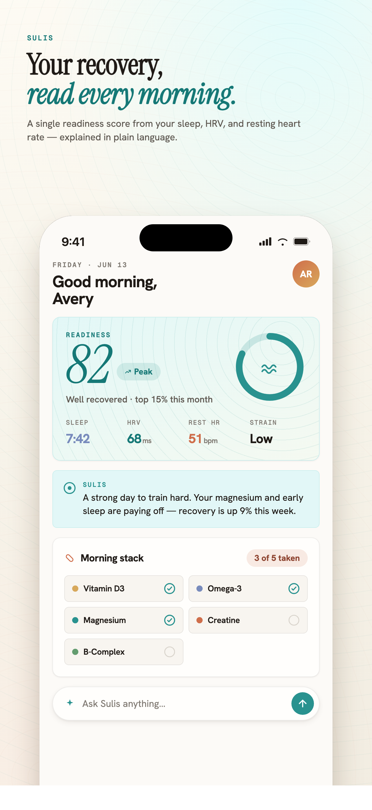
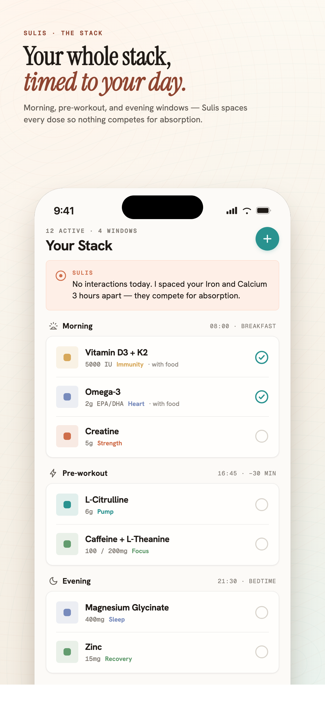
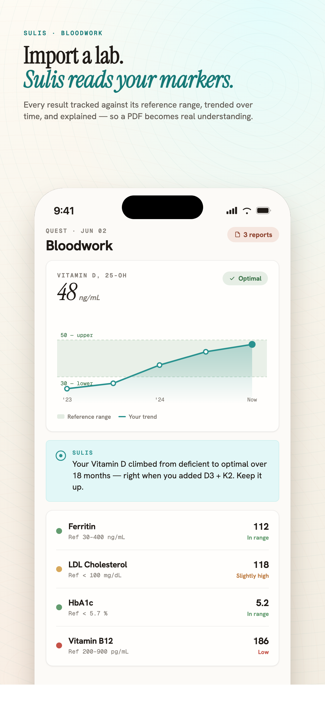
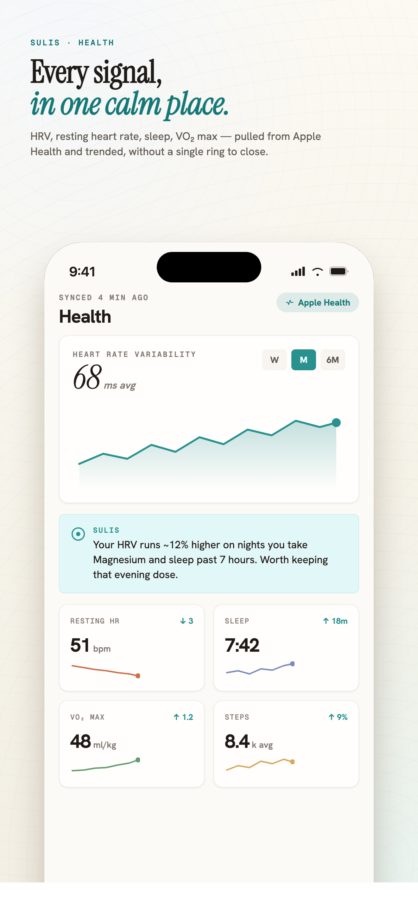
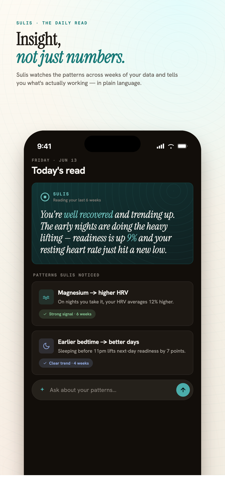
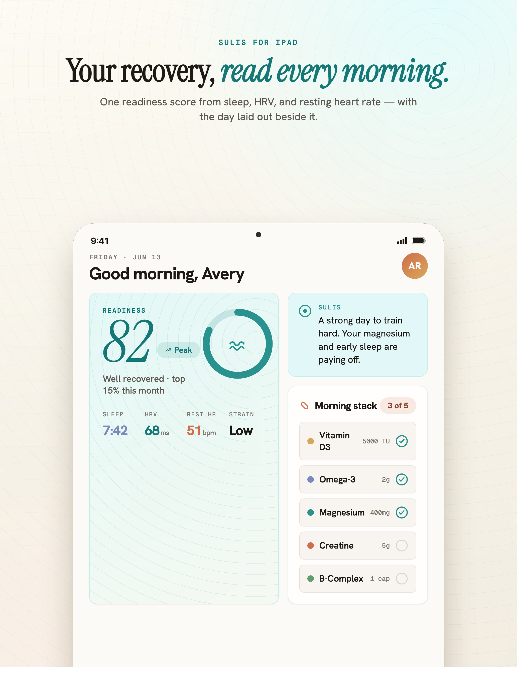

A daily readiness score
Sulis learns your own baselines from HRV, resting heart rate, sleep, respiratory rate, and wrist temperature, then scores your readiness for the day — time-of-day aware, never one-size-fits-all.
Sulis quietly unifies your supplements, Apple Health, workouts, recovery, and bloodwork — then writes a plain-language daily read so you actually know how you are. No rings to close. No guilt. Just clarity.


"Your HRV runs 12% higher on nights you take magnesium and sleep past seven hours. I'd keep that evening dose."
— Sulis, after noticing a pattern across six weeks of your own data
Everything that shapes how you feel, gathered in one calm place — and quietly explained.
Sulis learns your own baselines from HRV, resting heart rate, sleep, respiratory rate, and wrist temperature, then scores your readiness for the day — time-of-day aware, never one-size-fits-all.
A short, plain-language note on how you are and why — running on Apple Intelligence on-device, or with your own Claude key. Insight only when it matters, never noise.
Track everything you take, schedule doses around your training and sleep, get gentle reminders, and see interaction flags — all folded into the same readiness picture.
Import your lab PDFs and Sulis reads the markers for you, canonicalizes the names, tracks trends over time, and shows where each value sits — in language a human can follow.
Connect Apple Health, Apple Fitness, Oura, and WHOOP. Workouts, recovery, steps, VO₂, and nutrition from the apps you already use flow in automatically — including a companion Apple Watch app.
Your data lives on your device and syncs only through your own iCloud. No accounts. No tracking SDKs. No servers of ours collecting your health data. The app is free — no in-app purchases.
Set it up once in about two minutes, then let it run in the background.
Warm mineral surfaces, generous space, and a single spring-teal accent — the same care, on every screen.







Free, with no account required and no in-app purchases. Connect your health data and meet your spring in under two minutes.